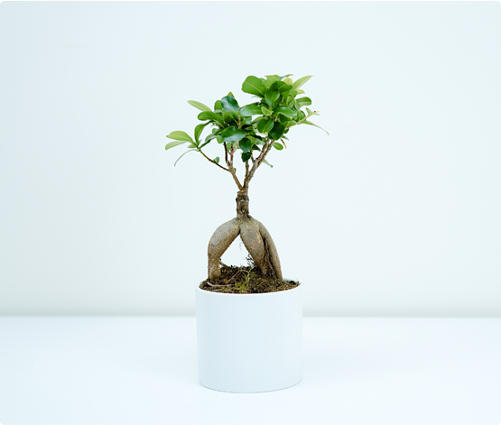

연구원, 규제 체크 담당자들이 성분에 대한 검색이 필요할 때, 모든 PDF를 일일이 조회
연구원과 규제 담당자의 검색 비용 증가는 단순한 불편을 넘어, 의사결정 지연과 중복 검토로 이어지고 있었으며, 이는 R&D 생산성과 규제 대응 속도에 직접적인 영향을 주는 문제였다.
사용자들은 정확한 문서를 찾고 싶은 것인가, 아니면 의사결정에 필요한 핵심 맥락을 빠르게 얻고 싶은 것인가?
특정 팀의 검색 로그와 문서 열람 패턴을 분석한 결과, 사용자는 정확한 문서 자체보다 성분 관련 요약 정보와 규제 맥락을 빠르게 파악하는 데 더 많은 시간을 쓰고 있음을 확인했다.
따라서 단순 키워드 검색 개선이 아니라, 의사결정에 필요한 정보를 요약·맥락화하는 방향이 더 적절하다고 판단했고, 이를 위해 시멘틱 서치 기반의 RAG 접근을 선택했다.
이 경험을 통해, 검색 문제에서 중요한 것은 항상 기술적 성능이 아니라 사용자가 어떤 결정을 하기 위해 검색하고 있는지를 이해하는 것이라는 관점을 갖게 되었다.
